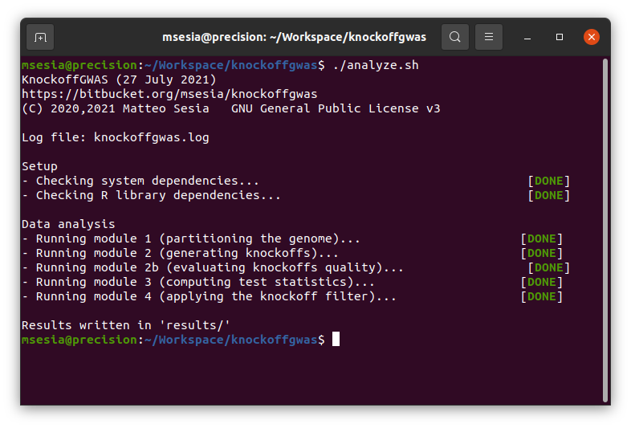

KnockoffGWAS tutorial
A toy genetic dataset containing 1000 artificial samples typed at 2000 loci (divided between chromosome 21 and 22) is available from the software repository as a tutorial for KnockoffGWAS. This data set contains both genotypes and phased haplotypes for all individuals, stored in the standard BED and BGEN formats accepted as input by KnockoffGWAS, along with the phenotype information and all necessary auxiliary files. Note that this tutorial is intended to be run on a Linux system.

To run the tutorial, download the software repository and enter the corresponding main directory. Then, compile the snpknock2 C++ program (to generate the knockoffs) by typing the following commands in your terminal:
cd snpknock2
make
cd ..After a successful compilation, you can execute the script analyze.sh contained therein.
./analyze.shThis will first verify whether the system dependencies (plink, R, and the snpknock2 executable compiled above), and then install any missing required R packages. Then, it will carry out an entire association analysis which should take approximately 5 minutes on a personal computer from start to finish. This analysis consists of 4 main modules, each encoded by a distinct script located within the sub-directory knockoffgwas/, and all automatically coordinated by analyze.sh. These modules organize the analysis as follows:
Partitions. Partition the available SNPs into contiguous groups at different levels of resolution, based on the genetic distance information provided with the data and the desired resolution values (measured in cM) specified by the user (a default option is specified in
knockoffgwas/module_1_partition.sh). The genome partitions computed by the module will be stored in the intermediate result directorytmp/partitions.Knockoffs. Generate knockoff genotypes for all specified genome partitions. This operation is carried out by the script
knockoffgwas/module_2_knockoffs.sh, which executes the snpknock2 program compiled above. The output knockoffs will be stored in standard BED format within the intermediate result directorytmp/knockoffs, merged with a copy of the original genotypes for subsequent convenience. A separate set of BED and auxiliary files will be produced for each available chromosome. The second part of this module,knockoffgwas/module_2b_knockoffs_god.sh, computes goodness-of-fit-diagnostics for the knockoffs corresponding to all chromosomes and resolutions. Plots summarizing the goodness-of-fit-diagnostics are stored in the directorytmp/knockoffs_gof_plots/. Thse goodness-of-fit-diagnostics should reflect the correct exchangeability of the knockoffs with the original genotypes; see the screenshot below for an example on the tutorial data, and the accompanying paper for more details.Statistics. Compute knockoff test statistics for all groups of SNPs, separately for each specified genome partition. This operation is carried out by the script
knockoffgwas/module_3_statistics.sh, which first merges the knockoff-augmented genotype files for all chromosomes and then converts them into a large file-backed matrix. Finally, this script fits a sparse generalized linear regression model to predict the phenotype of interest given the knockoff-augmented data using a very efficient implementation of the lasso, and utilizes that to compute the final knockoff test statistics, separately for each specified genome partition.Filter. The last module applies the knockoff filter to the statistics computed above, producing a separate list of discoveries for each specified genome partition. This operation is carried out by the script
knockoffgwas/module_4_discover.sh. The default FDR level is 10%, but it can be modified within this script. The final lists of discoveries will be written in the directoryresults/.

The final results can be visualized interactively with the script visualize.sh, which will launch a Shiny app in your browser. Some additional R packages are required by the visualization tool, and will be automatically installed if not found.
./visualize.sh
The expected results for the analysis of this toy dataset are provided in the directory results/ and can be visualized through interactive Chicago plots by running the script visualize.sh before running analyze.sh. Note that the script analyze.sh will overwrite the default results.